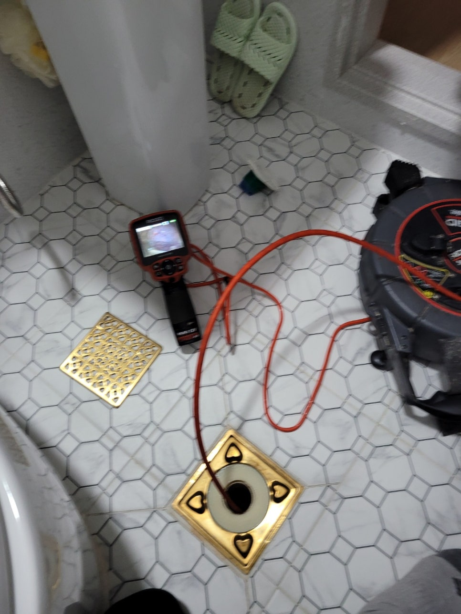
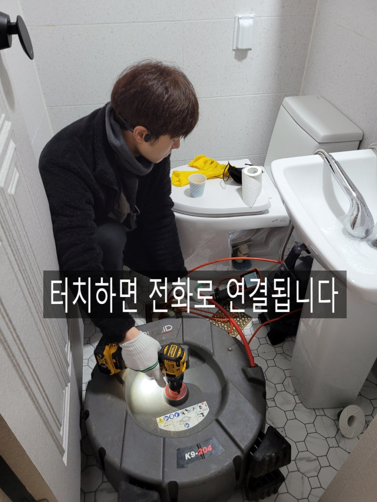
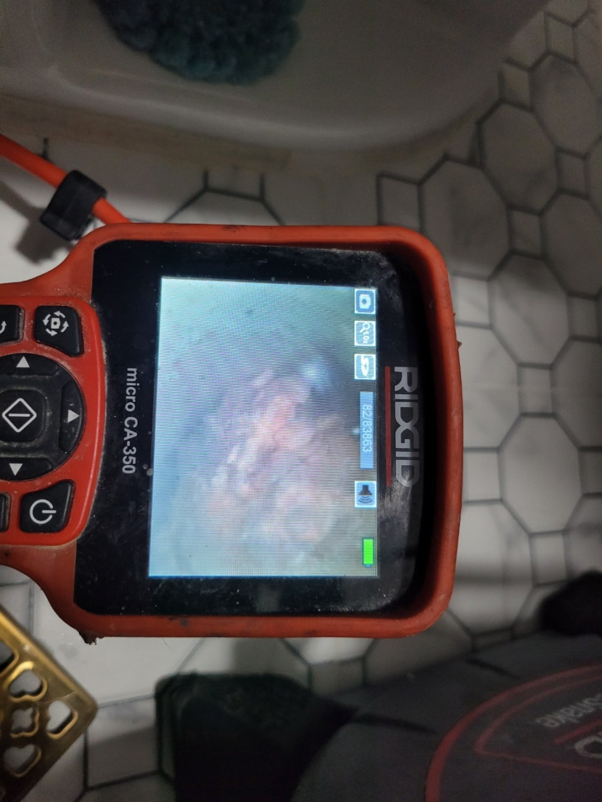
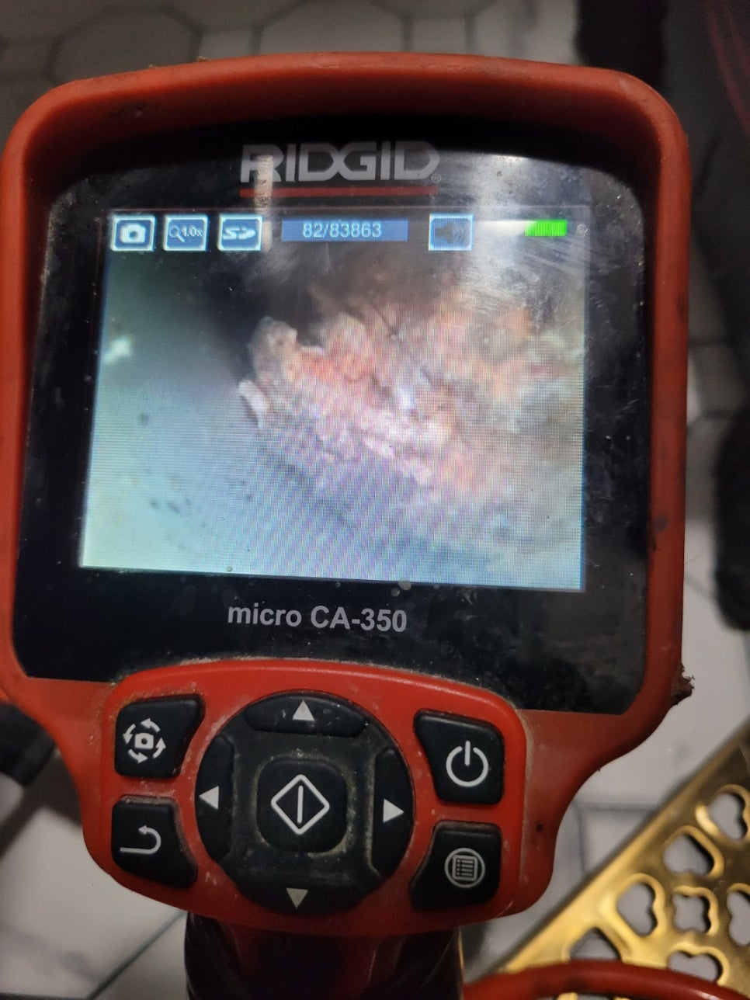
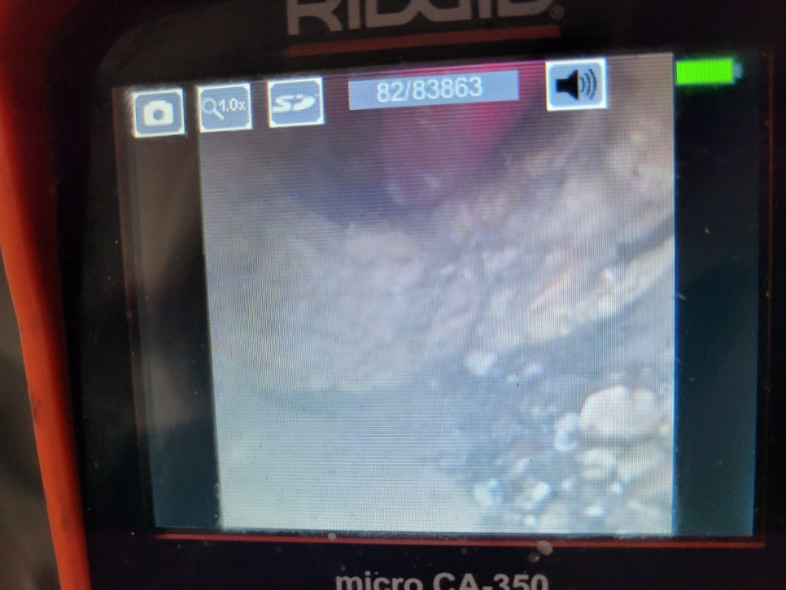
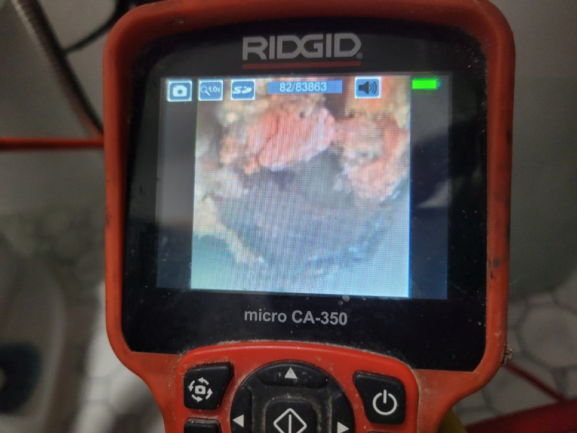

🏠 기흥구하수구막힘 동백 구성 마북동 하수구막힘
서울 기흥 싱크대막힘 전문 시공 후기

📋 작업 개요
- 위치: 서울 기흥, 기흥, 서울
- 서비스 유형: 싱크대막힘, 하수구막힘, 배관막힘, 집수정막힘, 역류해결, 고압세척, 설비공사
- 작업 일시: 2022. 2. 8. 23:43
- 업체명: 하수구수사대 (010-5615-2118)
🔍 문제 상황
기흥구하수구막힘 동백 구성 마북동 하수구막힘
안녕하세요
"하수구수사대"입니다.
오늘은 기흥구하수구막힘 현장을 다녀왔는데요
필로티구조로 2층이 제일 낮은층으로 201호 욕실에서
가끔씩 거품이 올라오고 물이 역류하는 증상으로 의뢰를 주셨습니다.
문제는 건물을 지은지 6개월만에 이러한 일이 있어서
건물을 지은 시공사에서 다시 배관공사를하여 따로 뺐다고 하였습니다.
하지만 결론적으로 엉뚱한 배관을 연결하여 근본적인
원인을 찾지 못하여 역류증상이 또 나타나게 되었습니다.
우선적으로 하수구역류 로 피해를 보고있는 201호에서 작업을
진행하였는데요 내시경으로 배관상태를 체크해 보기로 하였습니다.
다세대 주택의 경우 세면대,화장실바닥,싱크대는 대부분 하나의
배관으로 합쳐져 나가는 구조이다 보니 배관에 기름슬러지가 많이
보였는데요 정확한 원인을 찾기 위해서는 배관을 세척하면서 찾아나가기로
하였습니다.

🔎 원인 분석
💡 전문가 진단: 하수구수사대수도권전지역 당일방문010-2340-2118
배관을 세척하는 방법은 몇가지가 있는데요 크게본다면
고압세척과 플렉스샤프트로 나뉠수 있답니다. 고압세척은
비교적 큰배관 또는 긴배관에서 주로 사용한다고 보시면 됩니다.
플렉스샤프트 또한 고압만큼 배관을 깨끗하게 할수 있는 장비로
실내에서 쓰기에는 최적의 장비입니다
배관에 기름덩어리가 고체화되어 물길을 막고 있었는데요
이처럼 배관이 동맥경화처럼 구멍이 좁아진상태에서 많은 양의
물이 내려온다면 소화하지 못하고 낮은곳으로 역류할수 있답니다.
거품도 마찬가지로 물위에 떠있다보니 물보다 먼저 역류할수 있어요.
하지만 근본적인 원인은 따로 있었답니다!!
기름슬러지 영향도 있겠지만 근본적인 원인은 바로 "체크밸브"
이녀석 이였어요.
기름슬러지가 쌓이게 만든 원인제공도 "체크밸브" 입니다.
"체크밸브"의 역할은 물이 흘러나갈땐 열리고 흘러나간뒤에는
닫혀 하수구냄새역풍을 잡아주는 기능을 해주는데요 하지만
필로티구조의 집에는 거의 설치하지 않는게 대다수입니다.

🔧 작업 과정
하지만 이곳은 특이하게도 이 "체크밸브"가 달려있었어요.
그러다보니 "체크밸브"의 밸브가 무거워 물이 반쯤 고여있어도 밸브가
열리지않이 물위에 기름이 떠있고 배관옆부분부터 조금씩
쌓였던 것이죠. 또한 밸브에 머리카락같은 이물질이
밸브에 끼게 되면 밸브가 고장이 날수도 있으니
건물을 지은지 6개월만에 역류가 되었던 것이에요.
근본적인 원인을 해결하려면 "체크밸브"를 제거하고 물이
잘 흘러나가도록 배관은 연결해주는 작업을 진행하였어요.
냄새역풍방지때문에 설치를 하였지만 제일 말단인 오수받이가
트랩구조로 되어있어 굳이 필요가 없는 장치이기 때문에
과감하게 제거하는게 좋답니다.
6개월만에 하수구가 역류했다고 하여 구조적인 문제가
있을거라 판단은 했었지만 "체크밸브"가 있을줄은 생각도
못했답니다. 보통은 제일 말단인 집수정에 설치를 하는데
요즘엔 오수받이가 역풍방지 구조로 되어 있어
오래된 건물에서나 볼 수 있는 것이기 때문이에요.
밸브가 제법 무거워 많은양의 물이 내려오지 않는다면 열리지도
않아 문제가 생겼던 것입니다.
하수구수사대
수도권전지역 당일방문
010-2340-2118
메인배관엔 여러집에 쓰는 공동배관이기 때문에
주민들의 의견이 맞아야 하는데요 간혹 윗층에 사는 사람들중
상식이하의 사람들이 있기도 합니다ㅜㅜ
일하는 사람으로서 화가 나기도 한답니다.


✅ 작업 완료
본인이 겪지않으면 모르는 분들 . . .
다행히 입주대표님께서 입주민들과 상의가 잘 되셔서
근본적인 원인해결되고 일도 잘 마무리 된 현장입니다
"하수구수사대"는
서울/경기/인천 전지역 출장가능하며
하수구막힘으로 고민중이시라면
언제든지 연락주세요




⚠️ 주방 싱크대 배관 막힘 예방 수칙
- ✅ 기름기가 묻은 식기나 프라이팬은 설거지 전 키친타올로 반드시 기름때를 닦아내세요.
- ✅ 주기적으로 싱크대 개수대에 뜨거운 물을 가득 받아 한 번에 내려 배관 내부 기름을 씻어내세요.
- ✅ 배수구 거름망을 미세한 필터로 사용하시고 음식물 찌꺼기가 틈으로 새어 들지 않게 관리하세요.
- ✅ 베이킹소다와 식초를 뜨거운 물과 함께 일주일에 한 번씩 부어주면 배관 살균과 막힘 예방에 좋습니다.
💡 핵심 정리
- 확실한 장비 작업(내시경 점검 및 샤프트 스케일링)으로 원인을 뿌리 뽑습니다.
- 작업 후 1년 이내에 동일한 부위 재발 시 100% 무상 A/S 서비스를 보장합니다.
- 서울 · 경기 · 인천 전 지역에 24시간 언제든 긴급 출동할 수 있도록 항시 대기 중입니다.
❓ 자주 묻는 질문 (FAQ)
🚨 서울 기흥 싱크대막힘 문제로 고민이신가요?
정확한 원인 진단과 확실한 시공으로 재발 없는 해결을 약속드립니다.
24시간 긴급 출동 | 서울 · 경기 · 인천 전지역 | 1년 내 재발 시 무상 A/S